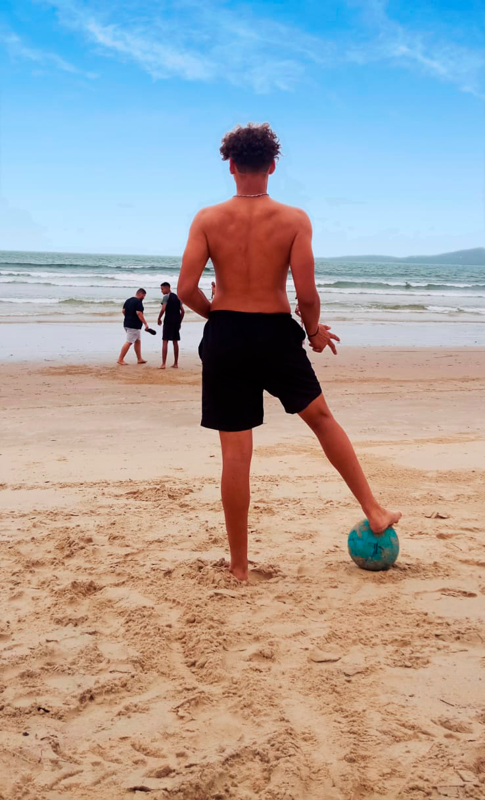

Sobre Mim
Olá, eu sou Gustavo de Oliveira Cruz.
Vou falar um pouco da minha vida na parte de futebol...
Infelizmente eu quebrei o braço quando eu tinha 12 anos
jogando bola, mas, mesmo assim eu nunca desisti do meu sonho.
Sempre que vejo uma oportunidade de jogar eu aproveito porque
e algo q eu amo muito mesmo me machucando quase toda vez.